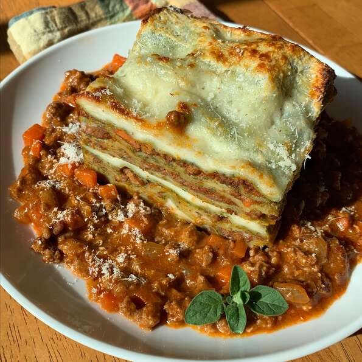

Lasagne

Description
This is an adaptation of the official lasagne from the Bolognese Chamber of Commerce.
I've made a couple of changes suggested to me by people from the area, such as which meat and wine to use or if there should be milk added or not. One thing never in question, though, is the green lasagne sheets. These are a must. The ragu is an authentic sauce, simple without garlic or herbs and spices. Using fresh pasta keeps you from having to pre-boil it.
Ingredients
- Panceta
- Carrot
- Yellow Onion
- Ground Beef
- Tomato Sauce
- Pasta
- Salt
- Water
- Backing Flour
- Butter
- Milk
- Cheese
Steps
- Saute pancetta in a large stockpot over medium-high heat until fat has rendered, 1 to 2 minutes. Add carrot, celery, onion, and oil. Cook about 5 minutes and add beef. Cook about 5-7 minutes more.
- Add tomato souce
- Start preparing pasta after sauce has been cooking for 1 1/2 hours. Bring water and salt to a boil in a small saucepan.
- Taste the ragu and adjust salt. Remove from heat and add milk; stir well and set aside to cool.
- Divide pasta dough into 4 equal sections. Use a pasta machine, or rolling pin, dusted with flour, to roll pasta into 1/16-inch thick sheets. Lay sheets on clean dish towels to help them dry. Let rest for 20 minutes.
- Meanwhile, melt butter in a saucepan over medium heat. Do not allow it to brown or burn. Add flour and whisk constantly until golden. Add 1/2 cup milk, whisking constantly. Repeat with remaining milk.
- Preheat the oven to 350 degrees F (175 degrees C).
- Spread a bit of the ragu sauce over the base of a 9x13-inch baking dish. Add a layer of pasta. Top with a spoonful of sauce and bechamel. Add a spoonful of grated Parmigiano-Reggiano. Top with another layer of pasta. Add more sauce, bechamel, and cheese. Repeat layers until you reach the top; finish with a layer of pasta, bechamel, and cheese.
- Bake in the preheated oven until the sauce is bubbling and the cheese on top has browned, 25 to 30 minutes. Let lasagne rest for 10 or 15 minutes at room temperature before slicing.